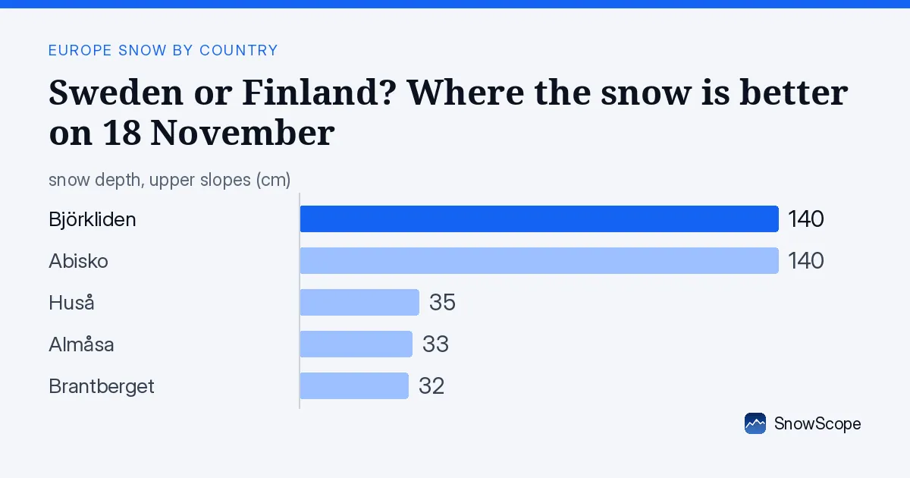

Sweden or Finland? Where the snow is better on 18 November
83 % of the mapped high ground is white in Sweden, against 55 % in Finland. The deepest resort in Sweden has 46 cm; in Finland it is Kallin with 26 cm.
See the live snow forecast for Björkliden in the SnowScope appSnow depth, powder alerts and the 3D map, free.
Across the border
For a trip near the border this decides the direction: the snow is not where the map of borders would suggest, it is where the last storm went.
Snow covers roughly 269,420 km² in Sweden on 18 November, 12,280 km² more than yesterday. In other words, 83 % of the mapped high ground is white.
| Country | White | Deepest resort | Next 7 days |
|---|---|---|---|
| Sweden | 83 % | Björkliden | 15 cm |
| Norway | 89 % | Riksgränsen | 38 cm |
| Finland | 55 % | Kallin | 13 cm |

The neighbours today
For comparison, the neighbours on the same day: Norway: 89 % white, deepest Riksgränsen with 168 cm, up to 38 cm in the week ahead; Finland: 55 % white, deepest Kallin with 26 cm, up to 13 cm in the week ahead.

Shortlist for the weekend
The deepest snow of the country's resorts is at Björkliden: 140 cm.
Close behind: Abisko (140 cm), Huså (35 cm), Almåsa (33 cm) and Brantberget (32 cm).
Björkliden picked up 4 cm in the last three days and could add 4 cm by Saturday 21 November.
Abisko picked up 4 cm in the last three days and could add 2 cm by Saturday 21 November.
Snow lies on the upper slopes of 61 out of 75 resorts in Sweden.
The rest of the shortlist: Huså: 35 cm on top, 2 cm in three days, 3 cm expected; Almåsa: 33 cm on top, 2 cm in three days, 1 cm expected; Brantberget: 32 cm on top, 6 cm in three days, 10 cm expected.
The next days
The week ahead could bring up to 15 cm, 12 cm of it in the next three days.
The snowiest day looks like Friday 20 November, with up to 6 cm in the snowiest spots.
Further out, days 8 to 14 show up to 15 cm on the snowiest slopes.
The week in numbers
Snow cover in Sweden over the last days: 16 November 256,990 km²; 17 November 258,720 km²; 18 November 269,420 km².
The deepest resort changed hands 1 times this week.
Snow depth by height
Climb and the snow gets deeper: between 0 and 500 m, 10 cm on average, 76 % covered; between 500 and 1,000 m, 15 cm on average, 100 % covered; between 1,000 and 1,500 m, 42 cm on average, 100 % covered; between 1,500 and 2,000 m, 67 cm on average, 100 % covered.
Snow on the ground
Even the lowest ground is mostly white. Last week's 185,880 km² has grown by 83,540 km².
Where the fresh snow fell
Hardly any new snow fell in the last three days: the three-day maximum is 11 cm.
Compared with past winters
Resort by resort, today against a normal 18 November: Björkliden: 46 cm at about 678 m, against 45 cm in a normal year; Abisko: 33 cm at about 652 m, against 28 cm in a normal year; Huså: 20 cm at about 548 m, against 19 cm in a normal year; Almåsa: 22 cm at about 560 m, against 17 cm in a normal year.
4 of these 4 resorts are above their usual depth for the date.
These depths are for one height on each mountain, below the top, so they read lower than the upper-slope numbers further down.
In past winters the best snow at Björkliden usually came early April / mid-April.
Planning a day on the snow
Above 500 m the ground is almost fully white (100 % covered), so runs up there have a continuous base.
Between 0 m and 500 m the cover is patchy, about 76 % white: expect grass and stones between the snow.
If you can choose the day, go after Friday 20 November: the fresh snow then has time to settle and the roads to be cleared.
On the ground
Fresh snow on top of the base means soft turns on the upper slopes, while the lower runs stay patchy.
Keep an eye on the forecast: the coming snow could change the picture quickly.
Tips for skiers
- Read the local avalanche bulletin before going off-piste.
- Early-season snow is thin over rocks: ski the groomed runs first.
- Roads to the higher resorts may need winter tyres or chains.
About these numbers
Resort snow depths are the deepest snow on the resort's upper slopes from the SnowScope snow model (about 1 km, run of 18 November); they are estimates for an area, not a measurement at one point. Station values are measurements on the date shown. Forecasts can change. Always read the official avalanche bulletin before going off-piste.
Cite this report
For research, teaching or the press: the numbers and charts are free to reuse under CC BY 4.0 with this citation.
SnowScope (2026), Sweden or Finland? Where the snow is better on 18 November, https://snowscope.app/blog/en/2026/11/sweden-snow-vs-neighbours-18-november-2026.html, accessed 2026-11-18
SnowScope (Atlas Labs). (2026, November 18). Sweden or Finland? Where the snow is better on 18 November. SnowScope snow reports. https://snowscope.app/blog/en/2026/11/sweden-snow-vs-neighbours-18-november-2026.html
BibTeX
@misc{snowscope2026swedensnowvsneighbours18,
author = {{SnowScope (Atlas Labs)}},
title = {Sweden or Finland? Where the snow is better on 18 November},
year = {2026},
month = nov,
howpublished = {\url{https://snowscope.app/blog/en/2026/11/sweden-snow-vs-neighbours-18-november-2026.html}},
note = {Published 2026-11-18 12:51 UTC; accessed 2026-11-18}
}· CC BY 4.0 · Methods, data and tools →
Björkliden: snow and temperature by height, this winter vs last (tools) →
Follow Björkliden
Free: a message when fresh snow is coming, and the forecast every morning.
More snow reports

Deer Valley ski conditions on 13 November 2026: no real snow on the ground yet, about 4 in near the top from the weekend storm, rain on the low East Village side below about 6,700 to 7,600 ft, and 11 in up top over the week.

Bogus Basin snow check for Boise skiers on 13 November 2026: no snow on the ground yet, rain and mixed snow this weekend with a snow level near 6,300 to 6,800 ft, then colder air and about 8 in at the summit by next week.